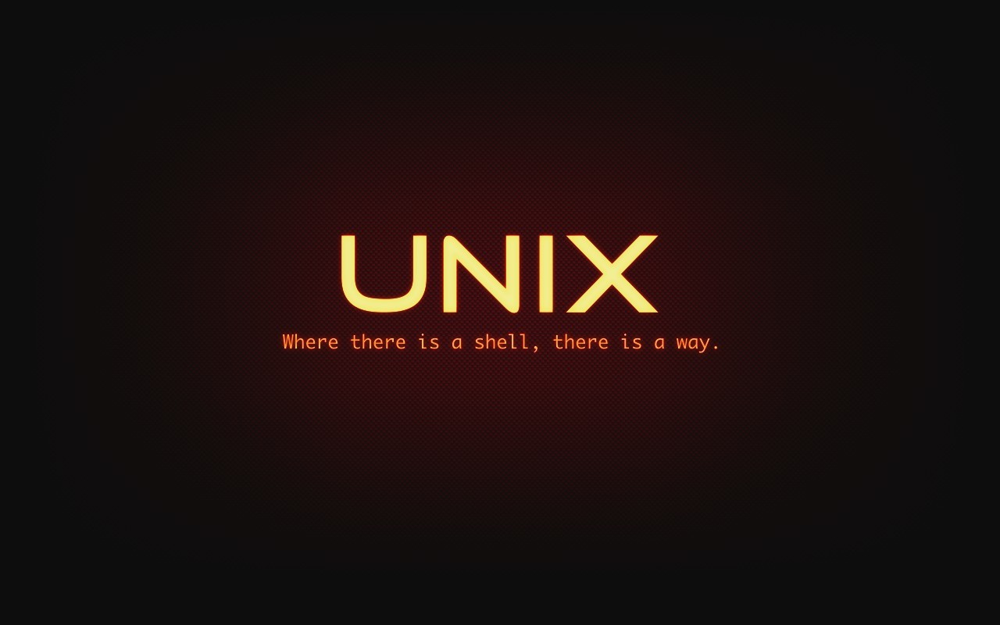

Говорим о новом
Простые инструменты
для решения сложных бизнес-задач
Автор: Давыденков Михаил
Содержание
- Ничего, чего вы бы не знали
- Паук Meta checker
- Робот Sokratbot
- Мини-тренажер
- Конструктор лендингов
- * Хэлсчеки и метабейз
- Программирование и бизнес (win-win)
- Ruby-way && Unix-way
- Про Нетологию-групп
Меня зовут Михаил :)
рад познакомиться!
- МАИ (специалист по автоматизации)
- | Газпром космические системы (спутники)
- | Банк (система обработки кредитных заявок)
- | Стартаперские проекты в progress engine
- | Нетология-групп
Ничего, чего вы бы не знали
- Главное в программировании и разработке - управление сложностью
- Чтобы делать сложные и большие вещи, нужно уметь делать простые вещи
- И разбираться в инструментах
Спасибо, кэп!
К сожалению обычно бывает так
Не будем долго философствовать.
Возьмем бизнес-задачу
Есть сайт, у которого допустим 5_000 страниц в поисковом индексе (или 55_000)
И мета-теги для каждой из страниц
ставятся в админке людьми
(уникальные тайтлы, дескрипшны, ключевые слова и тд)
А люди допускают ошибки
Что будем делать? Валидации? Дефолтные значения?
Tell, dont ask!
Как мы разобрались у себя с этим
Meta checker - репозиторий на гитхабе, который можно скачать и настроить под себя
Стягивает sitemap.xml или берет с диска,
обходит все страницы, ищет в них нужные метатеги,
говорит в слак если что-то не ок
Инструменты: Ruby + rspec ,
гем, который из sitemap.xml делает массив страниц,
простейшие вебхуки в слак (один запрос курлом)
Meta_checker. Core
Ruby - идеальный инструмент для подобных задач.
Невероятное сочетание скорости разработки и бизнес-value
Кто может похвастаться что у него все ок с метой :) ?
Другая проблема. Работа с шаренными ресурсами
Дано:
- В Нетологии параллельные и независимые релизы
- Каждый релиз на своей релиз-кандидат машине (продакшн лайк сетап)
- И рц машин пока что меньше чем людей

Было
(разговоры где бы занять)
Стало (это ссылка)
Алексей Иванов (автор), Паша Комягин и я за несколько вечеров написали минимальную систему бронирования
* В Фоксфорде сейчас более совершенная система деплоя, которая не предполагает ручного бронирования
Что мы взяли:
Как видно из кода тут:
- Hedwig-based робот (слушает события слака и может реагировать на эти события через механизм респондеров - см. документацию hedwig),
- Ecto для удобного управления стейтом в БД (кто что забронировал),
-
Plug-based роутер чтобы отвечать на слеш-команды слака
(а также чтобы управлять контентом БД)
Сейчас мы смотрим на систему сверху (проектирование сверху внизу). Любой новый для вас прооект стоит смотреть, начиная с точки входа, а дальше пытаться разобраться в деталях (где-то это файл main.cpp, где-то Makefile, в данном случае это аппликейшн файл)
В чем профит от таких поделок?
- Борьба за время, меньше времени тратится на бесполезные вещи
- В свободное от работы время можно совместить приятное с полезным (взять и изучить что-то новое с пользой для компании где ты работаешь и для коллег)
- Такие задачи хороши для молодых разработчиков (мотивация)
- Elixir хорошо работает когда нужно спроектировать несколько независимых контуров управления
Мини-Тренажер (это тоже ссылка)

На канале Алексея Евдокимова ( Онлайн-школа на Ruby on Rails ) можно посмотреть более подробный рассказ про тренажер Нетологии и сравнение его с аналогами компаний-конкурентов
А что внутри?
Как видно из файла docker-compose.yml тут:
-
Веб-приложение ( рэльсы )
(менеджмент контента вопросов в БД, взаимозаменяемость людей) -
Ооочень маленький сервис c оочень маленьким рантаймом, который исполняет код ( ЭЛИКСИР + использование механизма портов ( Port ), который идет в стандартной библиотеке)
Написано стажером Нетологии - Александром Басовым
Можно поднимать контейнеры динамически по запросу, но для прототипа дешевле держать фиксированный пулл действительно маленьких сервисов. - Хранилище стейта, ansible для сетапа, docker swarm из-за того что нужно скалирование + это проще чем k8s (для прототипов отлично)
Ну и зачем же вы притащили эликсир?

Ну и зачем же вы притащили эликсир?
- Механизм портов предоставляет возможность писать меньше кода при работе с созависимыми процессами
- Маленький рантайм позволяет сделать контейнер приложения минимального размера (взяли alpine linux)
- Докер сворм позволяет заскейлить выполнение кода независимо от основного приложения
(возможен мультинодовый сетап с абстракцией над сетью c рескейлингом на лету) - Есть пространство для маневра и расширения приложения для других рантаймов
(отдельный контейнер для JS, отдельный для Ruby, отдельный для Python и тд)
Мини-тренажер. Суть

Композиция из Ruby и Elixir
- Руби дешевле использовать для массовых вещей
( Convention over configuration , взаимозаменяемость разработчиков на рельсах) - Одно из главных достоинств Erlang/Elixir и BEAM - легкий рантайм и actor-based модель параллельных вычислений
- Зная сильные и слабые стороны языков программирования мы получаем масштабируемый и гибкий инструмент
Конструктор лендингов
Akira Matsuda на одном из рэилс клабов сказал:
- Если библиотека подходит на 100%, то ее можно взять
- Если не подходит на 100%, то сделай форк
- Если не подходит и не можешь сделать форк, то сделай свою
В случае с конструктором лендингов нам было дешевле сделать свое,
т.к. лендинги/витрины - очень важные состовляющие любого бизнеса
Конструктор лендингов. Готовим
- Берем JSON, кладем в БД (на самом деле там два поля с JSON, незапаблишенный JSON и запаблишенный)
- Наворачиваем поверх этого стейт-машину
(логика паблишинга/предпросмотра/режима редактирования) - Исключаем бекенд из цепочки взаимодействия
Маркетинг-Дизайн-Фронтенд - ???
- PROFIT!
Подробная презентация от автора конструктора Павла Комягина
Конструктор лендингов. Как выглядит
По специальному урлу в который можно попасть из админки отрисовывается страница
Конструктор лендингов. Выбор иконок
Конструктор лендингов. Цветовые схемы
Конструктор лендингов. Цветовые схемы
Конструктор лендингов. Добавление целых блоков
Конструктор лендингов. Предпросмотр
Конструктор лендингов. Предпросмотр
Конструктор лендингов. Идея
Конструктор лендингов. Стало
-
Создаем новую программу (профессию, онлайн-, офлайн-интенсив) в CRM (15 минут)
-
Рисуем новые иконки (2 часа)
-
Тип программы определяет шаблон - набор блоков и их цветовую схему
-
Заполняем контент блоков в конструкторе (2 часа)
-
Публикуем лендинг (1 минута)
-
Блоки общие, правки логики вносятся в одном месте
-
Контент заполняется менеджерами, разработка не отвлекается на это
-
Profit!
Конструктор лендингов. Выводы
- Лендинги - очень критичный инструмент для бизнеса
и здесь важна максимальная гибкость и экономия времени - Важные для бизнеса вещи чаще всего кастомные
- Цель - минимум времени
Программирование и бизнес (Win-win)
Разработка - лишь небольшая составляющая бизнеса,
и важно это понимать.
Можно совмещать приятное для разработчика и полезное для бизнеса
Однако когда речь идет про критичные вещи,
то нужно иметь кругозор и квалификацию,
и учитывать много факторов
Unix-way
Поднимите руку кто читал принципы Unix-way ?
Ruby-way && Unix-way
- Ruby VS Python
Есть множество вариантов как решить бизнес-задачи.
Выбирайте что вам нравится, но сделайте это понятным для людей и бизнеса. Это практично - Unix-way применим и к процессу разработки продукта. Делать именно то, что требуется
(важно, чтобы требования были прозрачными) - Unix-way - это принципы и культура. Мы стараемся взращивать у людей культуру разработки образовательного продукта
Нетология-групп
Если у вас есть абмиции и желание формировать новую образовательную реальность вместе с командой разработки Нетологии-групп -
присылайте ваши резюме на hr@netology-group.ru